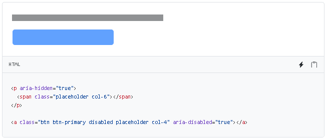
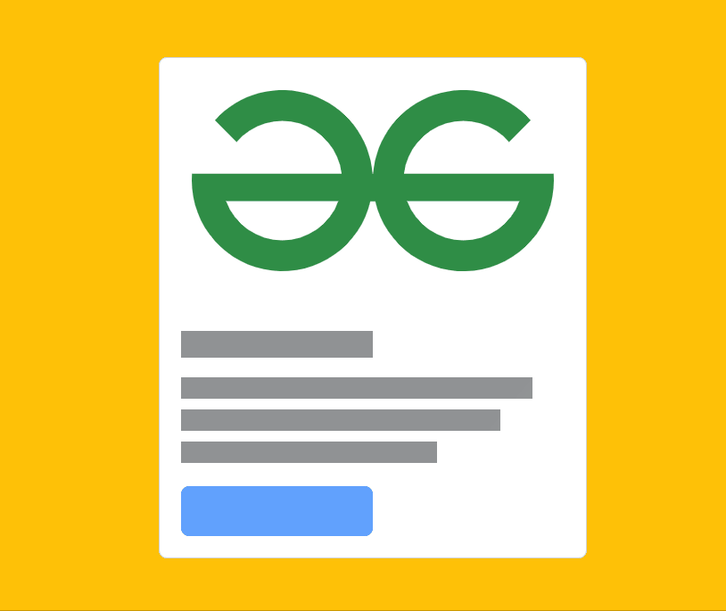

Es un componente que se encarga de dividir el contenido en páginas separadas y proporciona los controles necesarios para poder navegar entre ellas de forma fácil y eficiente. Este consta de un gran bloque de enlaces conectados de forma escalada.
Para implementarla se utiliza un elemento <nav> para identificarlo como una sección de navegación, En el caso en el que las páginas tengan más de una sección de navegación se sugiere agregarle aria - label para así identificar más fácilmente el propósito de esa sección.
NOTA
Los atributos ARIA (Accessible Rich Internet Applications) son los encargados de hacer que el contenido web sea más accesible para personas con discapacidades. En el caso del atributo “aria-label” se encarga de proporcionar una descripción para elementos de interfaz de usuario.
Se puede implementar el uso de iconos para algunos enlaces de paginación, como lo puede ser las flechas para pasar de una paginación a otra. se utilizan los atributos aria.
NOTA
El atributo “aria-hidden” se encarga de Ocultar elementos que no aporten información relevante para el usuario.
Con este componente también se pueden personalizar los enlaces de paginación, utilizando disabled para que los enlaces no se les pueda hacer clic y .active permite indicar la página actual en la que se encuentra el usuario. estos elementos se agregan como clases.
Esta propiedad como tal aún no se encuentra habilitada al 100% en css y requiere agregarle tabindex="-1" en los enlaces que están deshabilitados. Para que esta funcionaldad se desactive completamente se requiere usar javascript personalizado.
Otra forma de personalizar este componente es Ajustando el tamaño Haciendo lo más grande o más pequeño utilizando .pagination-lg o .pagination-sm
Finalmente la última forma para personalizar este componente es el cambio de alineación de los elementos de paginación al centro o a la derecha, Esto se realiza al agregar una clase en <ul> llamada pagination justify-content-center. o pagination justify-content-end.

Es un componente que se encarga de dar una vista previa a cómo se verá el contenido Cuando cargue al 100%, la diferencia con el resultado final es que no tendrá texto sino que es la silueta de la estructura como tal.
Para utilizarlo se crean marcadores de posición en la clase .placeholder y una clase de columna de cuadrícula (ejem: col-6) para establecer el width.
Cuando se quiere cambiar el width, se realiza el cambio mediante clases de columnas, para ello hay tres formas:
También de forma predeterminada se le puede incluir color a través de currentColor
Para ajustar el tamaño se puede utilizar .placeholder-lg (grande), .placeholder-sm (pequeño) o .placeholder-xs (más pequeño)

Finalmente, para agregarle un toque de movimiento para transmitir mejor la percepción de que el elemento se encuentra cargando se utiliza .placeholder-glow o .placeholder-wave
